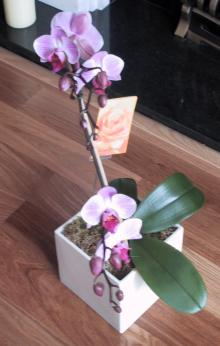
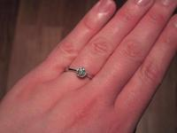

Wednesday, February 27, 2002I stumbled across some web-sites about the market town where we are having our wedding reception. The first, is the Market Weighton in Bloom site and the second is a site about the history of Market Weighton including pictures, activities etc.
Posted by Jane at 10:51 PM
Tuesday, February 26, 2002Excitement
I've made my first appointment at a Wedding dress shop. I'm going to one of the ones here in Brighton on Saturday afternoon, and am taking Susie with me for moral support. I'm not expecting to find the dress on Saturday, but hope to get a clearer idea of what I'm looking for. Then the Saturday after, Steff and I are hitting Oxford Street to go and see what we can find amongst the shops there. The London shops are going to be so busy, and three of the places I want to go don't have an appointment system - so it could be a bit mad.
Posted by Jane at 4:11 PM
Sunday, February 24, 2002I started emailing photographers today to see if any of them can do our wedding photos for us. We've also started putting together a book of photograph ideas taken from magazines with shots we like, and shots we don't like. Hopefully this will help us get wedding photos that we really want.
I've already one reply saying that they were booked up in 2000 for the date we're after. Oops! I hope we can find someone good.
Posted by Jane at 10:57 PM
Wednesday, February 20, 2002We had our first post-engagement/pre-wedding trip to Hull this weekend, and our mission was simple - to look at reception venues.
We managed to visit 5 different venues during Saturday, and ended up being very, very tired - it reminded me of the mind numbing tiredness that I've only ever experienced before when looking to buy a house.
Big Thanks go to my Dad who drove us around them all, and to Mum for coming with us and giving us moral support and to both of them for their feedback. We'll post more details about the venues and our choice later, but just in case you're interested, here is the list of questions that we asked of all the venues - poor people...
Posted by Jane at 9:30 PM
Sunday, February 17, 2002I've been an adult bridesmaid twice - once to Sue in 1995, and once to Rachel in 1996 - and I still have the Bridesmaids dresses in a cupboard upstairs. This morning I had a bit of a brainwave and so tried them both on to get a better idea of which style suited me better, and which I felt most comfortable in (both dresses were completely different). This was a useful exercise as it has given me a better understanding of what I will be looking for.
I'm sure it's still going to be a long process!
Posted by Jane at 8:23 AM
Thursday, February 14, 2002Woohoo, we now have a Best Man and a Matron of Honour.
Paul has agreed to be Rich's Best Man (for those of you who don't know Paul, him and Richard are friends from University days and first met on Valentines Day in 1986 when they both went to the open day at Sussex University).
Steff is going to be my Matron of Honour (Steff and I worked together at Aspect and became good friends whilst we were both working on a nightmare project - I was developing it, and Steff was trying to make some sense out of another company's design effort).
Posted by Jane at 11:44 PM
Wednesday, February 13, 2002
We have great friends: they send us some brilliant and unusal plants. Like these Orchids from Karen, Paul, Juliet, Steve, Rachel, Thomas and James.
Posted by Richard at 6:28 PM
Steff sent us a letter today, and she addressed it to "The Fothergill Dallaways (he he)". This really made me smile. Thanks Steff.
Posted by Jane at 6:57 PM
Monday, February 11, 2002Well, the "Wedding Packs" from various hotels, country houses and farms are starting to arrive. I've emailed/called about 21 venues, and currently only 2 have said they can't do a reception for us (due to either too many people, or that they don't currently do wedding receptions). Most of the places I've heard from so far have at least one date available, so there is hope for a September wedding. I've been using hitched's venue list as a starting point.
My Dad went to talk to a couple of places in Hull yesterday and asked in one particular hotel about availability and for more information. The lady asked what the surname was, and then laughed and said "Ah yes, she emailed us about this, I've put a pack in the post for her". The internet and email makes finding places SO much easier.
Posted by Jane at 10:03 AM
The Ring
Due to popular demand, here is a photo of my engagement ring. It's platinum and diamond and was bought from one of the jewellers in the Lanes here in Brighton.

Posted by Jane at 9:14 PM
(Click on the photo for a closer look)
So, we thought that it would be fun to have a blog for our wedding plans. Both for our friends and family to check and keep in touch with what is going on, but also for us to look back on in years to come (we've already found ourselves reading our usual blog to see what we were doing at certain times.)
So, Rich proposed to me on Saturday the 9th February just after a lovely lunch (it was supposed to be after breakfast but I had to go to work for an hour or so). We announced our engagement by email to most of our friends on Saturday afternoon. Then, on Monday after one too many questions, Rich wrote an FAQ about the wedding announcement.
Posted by Jane at 9:39 AM
{kind=link}